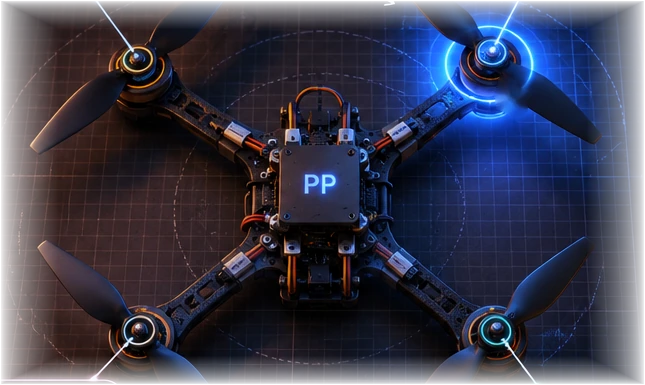

Hi, I'm
Poorv.
I build intelligent systems that interact with the real world.
Software engineering, machine learning, and robotics. From secure LLMs and medical signals to autonomous machines.

Things in motion.
Real software, research experiments, and machines. Open any case file for the decisions and details behind the work.
✳ Selected visuals are illustrative interfaces and research schematics; actual implementations and results are described in the case files.
Questions worth
testing.
I like the part where an idea meets a benchmark. My research has spanned cardiac audio classification, LLM-generated code security, and multi-drone coordination under uncertainty.
Read my IEEE paper ↗Where I've
worked.
A few stops across software engineering, applied ML, assistive communication, and research. Each one shaped how I think about building reliable systems.
Curious by
default.
I'm Poorv, an EECS student at UC Berkeley who likes turning research ideas into working systems. I've spent time with ML experiments, production-minded web apps, assistive communication software, and quadcopters.
I'm particularly interested in engineering where software has to contend with messy real-world constraints: reliability, latency, limited compute, and unexpected edge cases.
See what I'm building on GitHub ↗Have something
in mind?
Engineering opportunities, research questions, ambitious prototypes, or a conversation about something interesting.